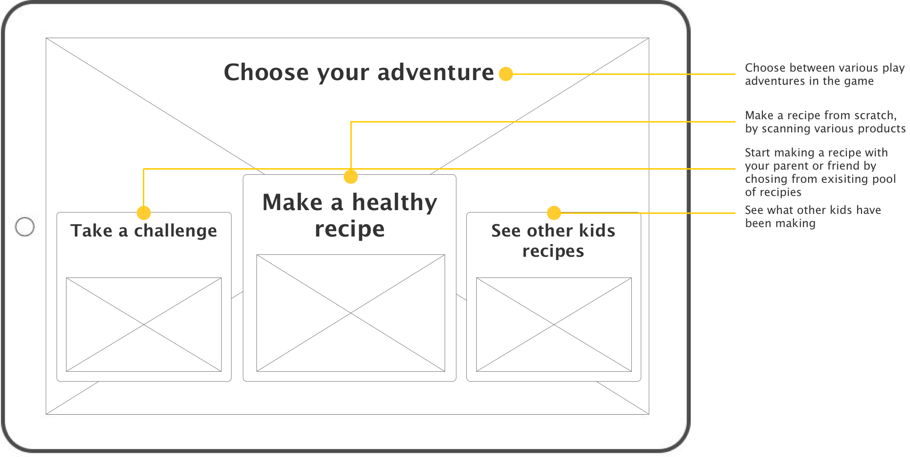
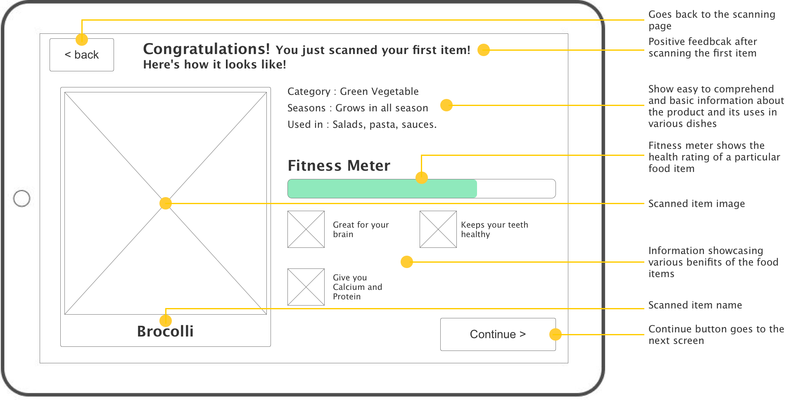
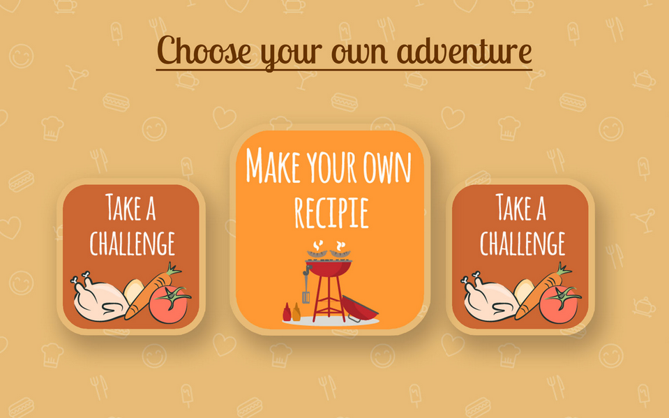

PIK-NIK
Problem Space
Grocery Shopping is a necessary task that most of us do at least once a month. We spend a large amount during the course of a week in purchasing, cooking, and consuming food, and it is essential for us to make informed decisions about the food we eat. But, to get that information while shopping along with managing your kids and family, takes time, and generally people are stressed for time. We aim at creating a solution for parents that will improve their shopping experience by making it more efficient, less time consuming, and assist in managing their children. We do not intend to create an interface that just helps parents track their kids, but rather a system that engages their children in the whole experience of shopping and getting more cognizant with the products they consume.
Another observation that we made was that most children are not engaged while at the store. They find it difficult to keep up with their parents while they are shopping and instead want to seek out entertainment. Children become impatient from boring stimuli in the grocery market, mindlessly meandering around isles of kitchenware, pharmaceutical, and other less than stimulating products. This time can be used to engage children in activities that teach them lessons in health, such as choosing the health foods and being conscious of the food options around them.
Design Ideation
 From three design alternatives and our final brainstorming session, we narrowed down our design idea to one concept. We decided to go with the handheld, gamified educational interface mentioned above.
From three design alternatives and our final brainstorming session, we narrowed down our design idea to one concept. We decided to go with the handheld, gamified educational interface mentioned above.
Wireframe
Example wirefrme of the homepage and item info page
 Visual Design
Example design outcome of the homepage and item info page

Usability Testing
We conducted some preliminary interviews with parents and children to dig deep into the subject. Also, we formally visited different grocery stores in Atlanta area, like Kroger, Publix, and Walmart. We talked to parents with kids and asked for any noteworthy problem in grocery shopping experience that they and their kids face.